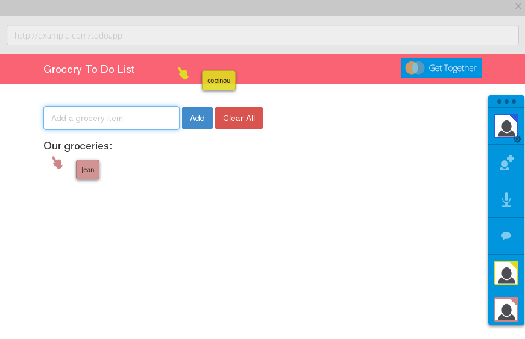

WebRTC
Das Web auf dem nächsten Level
Jan Lelis, @JanLelis
Marius Melzer, @faraoso
#ejs14 / 30. Juni 2014
palava.tv
Browser-zu-Browser Video
Komplett Open Source
palava e. V.
RTCWEB @ IETF
P2P Verbindungen zwischen Browsern
… inklusive Video/Audio Streams
Aufbauend auf bestehenden VOIP Technologien
WebRTC @ W3C
JavaScript API für das RTCWEB
Außerdem: Implementierung von Google
Internet Explorer?
Demo: Kamerazugriff
ASCII Kamera
Echtfarbwähler
Demo: Video Konferenzen
palava.tv
talky.io
codassium.com
Demo: Data Channels
Together.JS
Peer5 Downloader
Pipe.com
Banana Bread
WebRTC Verbindungsaufbau
Initialisierung mittels eines Rendezvous-Server: Signaling
Austausch von Streaming-Eigenschaften (SDP)
NAT Traversal über ICE mit STUN und TURN Servern
WebRTC Signaling Konzept
Entwickler entscheidet, wie eine PeerConnection entsteht
XMPP / SIP / WebSockets / XHR / …
Externer Signaling Kanal
Peers Finden
Austausch der verfügbaren Resourcen
Hole Punching
Erfolg / 84%
TURN Relay / 14%
Open Source Signaling Server
palava-machine (ruby)
signalmaster (node.js)
webrtc.io (node.js)
together.js hub (node.js)
peerjs server (node.js)
Video Konferenzen?
Pures WebRTC ist auf Mesh-Struktur beschränkt
Server: Multipoint Control / Selective Forwarding Unit
Data Channels
Das Web heute: Client-Server-Client Kommunikation
Das Web mit Data Channels: Client-Client Kommunikation
Dateiaustausch, Content-Delivery,
Vertraulicher Text, Gaming, …
JavaScript API
getUserMedia
<video id="gum-video" autoplay="autoplay">
<script>
navigator.webkitGetUserMedia(
{video: true, audio: false},
function(stream) {
document.getElementById('gum-video').src =
webkitURL.createObjectURL(stream);
}
);
</script>
PeerConnection 1/2
// create new peer connection
var pc = new webkitRTCPeerConnection(
{iceServers: [{url: "stun:stun.palava.tv"}]},
{optional: [{DtlsSrtpKeyAgreement: true}]}
);
// add a stream we got from getUserMedia
pc.addStream(localStream);
// bind remote stream to a video tag as soon as we get it
pc.onaddstream = function(event) {
$('#remote-video-tag')[0].src =
webkitURL.createObjectURL(event.stream);
};
// connect to signaling provider, e.g. palava machine
var server = new WebSocket('wss:machine.palava.tv');
PeerConnection 2/2
pc.createOffer(function(sdp) {
// register local SDP with our new connection
pc.setLocalDescription(sdp);
// send the SDP to other peer val signaling
server.send(JSON.stringify({peer_id: 42, event: 'offer', sdp: sdp}));
}
// other peer receives 'offer' and sends an 'answer' via server
server.onmessage = function(msg) {
payload = JSON.parse(msg.data);
if(payload.event === 'answer') {
pc.setRemoteDescription(
new RTCSessionDescription(payload.sdp)
);
// ...
// ice candidate exchange...
DataChannel
// uses PeerConnection w/ {RtpDataChannels: true}
dc = pc.createDataChannel("myDataChannel", {reliable: false});
// remote peerconnection has registered callback on datachannel
dc = null;
pc.ondatachannel = function(event){
dc = event.channel;
};
// both sides register events using a WebSocket-like API
dc.onopen(...);
dc.onmessage(...);
dc.onerror(...);
dc.onclose(...);
palava.tv Software Stack
Clientseitig: palava-client
Serverseitig: palava-machine
Unterstützung: palava-stats, palava-hq, …
Eigenes Palava
62 Zeilen inkl. HTML: Minimalbeispiel
palava.tv Webanwendung: palava-portal
WebRTC Signaling Service (in Arbeit)
WebRTC
Bringt P2P/Echtzeit-Kommunikation in das Web!
Stellt dafür eine einfache JavaScript API zur Verfügung
DataChannels ermöglichen nahezu serverlose Kommunikation
Standardisierung:
Entworfen, um mit dem Rest der Welt kompatibel zu sein
Dankeschön!
Und noch eine schöne #ejs14!